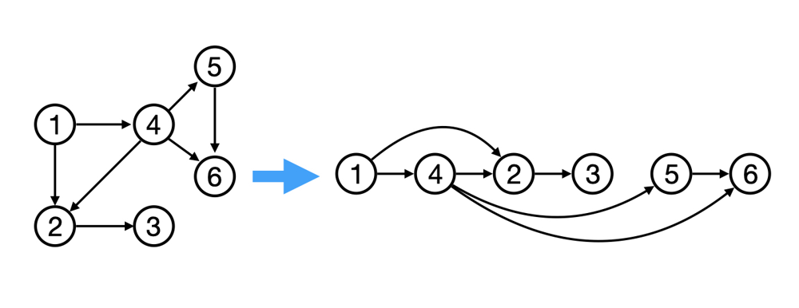
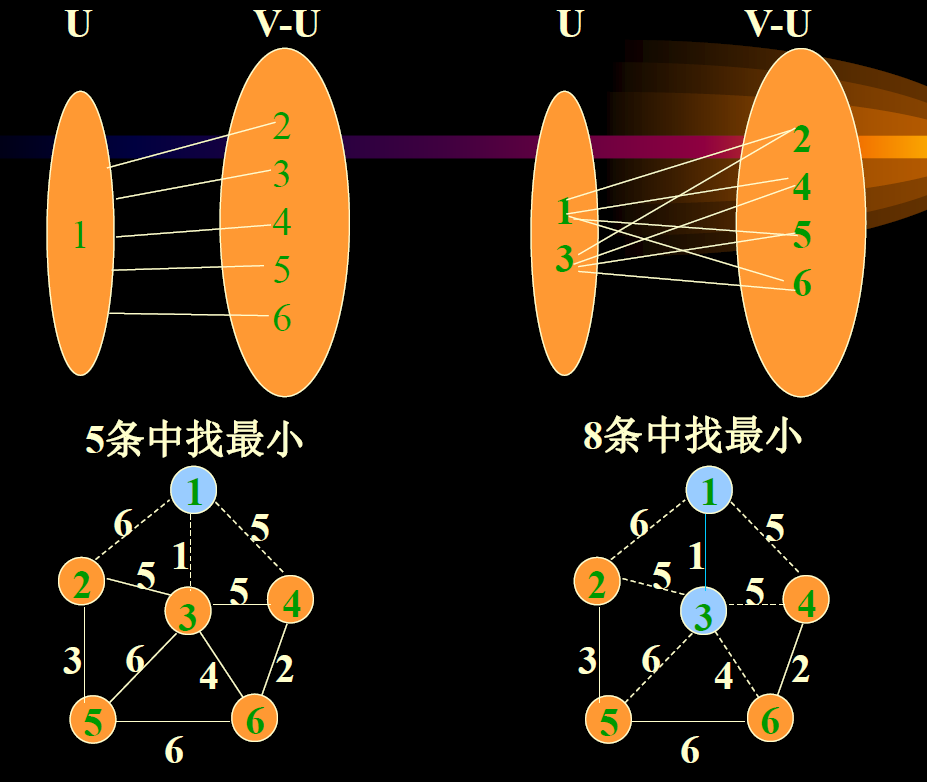

图论
4. 图论
- DFS适用于需要计算连通块个数、大小的题目，BFS适用于需要计算最短距离（最短路）的题目。
4.1 DFS
4.1.1 基础
- 图用矩阵存时
1 | |
- 图用邻接表存时
1 | |
- 当图为有向图时，不需要visited数组
4.2 BFS
4.2.1 基础
- 使用BFS求最短路径
1 | |
4.3 拓扑排序
- 把拓扑排序想象成一个黑盒，给它一堆杂乱的先修课约束，它会给你一个井井有条的课程学习安排。这是一种在图上的「排序」，可以把杂乱的点排列一排。前提条件是图中无环，从而保证每条边是从排在前面的点，指向排在后面的点。
- 
- 给定一个包含 n 个节点的有向图 G，我们给出它的节点编号的一种排列，如果满足：对于图 G 中的任意一条有向边 (u,v)，u 在排列中都出现在 v 的前面。那么称该排列是图 G 的「拓扑排序」。根据上述的定义，我们可以得出两个结论：
- 如果图 G 中存在环（即图 G 不是「有向无环图」），那么图 G 不存在拓扑排序。这是因为假设图中存在环
x1, x2...xn，那么在排列中 x1 必须出现在 xn 的前面，但同时 xn 也必须出现在 x1 的前面，因此不存在一个满足要求的排列，也就不存在拓扑排序； - 如果图 G 是有向无环图，那么它的拓扑排序可能不止一种。举一个最极端的例子，如果图 G 值包含 n 个节点却没有任何边，那么任意一种编号的排列都可以作为拓扑排序。
- 如果图 G 中存在环（即图 G 不是「有向无环图」），那么图 G 不存在拓扑排序。这是因为假设图中存在环
4.3.1 解法一：DFS
- 假设我们当前搜索到了节点 u，如果它的所有相邻节点都已经搜索完成，那么这些节点都已经在栈中了，此时我们就可以把 u 入栈。可以发现，如果我们从栈顶往栈底的顺序看，由于 u 处于栈顶的位置，那么 u 出现在所有 u 的相邻节点的前面。因此对于 u 这个节点而言，它是满足拓扑排序的要求的。这样一来，我们对图进行一遍深度优先搜索。当每个节点进行回溯的时候，我们把该节点放入栈中。最终从栈顶到栈底的序列就是一种拓扑排序。
- 对于图中的任意一个节点，它在搜索的过程中有三种状态，即：
- 「未搜索」：我们还没有搜索到这个节点；
- 「搜索中」：我们搜索过这个节点，但还没有回溯到该节点，即该节点还没有入栈，还有相邻的节点没有搜索完成）；
- 「已完成」：我们搜索过并且回溯过这个节点，即该节点已经入栈，并且所有该节点的相邻节点都出现在栈的更底部的位置，满足拓扑排序的要求。
- 通过上述的三种状态，我们就可以给出使用深度优先搜索得到拓扑排序的算法流程，在每一轮的搜索搜索开始时，我们任取一个「未搜索」的节点开始进行深度优先搜索。我们将当前搜索的节点 u 标记为「搜索中」，遍历该节点的每一个相邻节点 v：
- 如果 v 为「未搜索」，那么我们开始搜索 v，待搜索完成回溯到 u；
- 如果 v 为「搜索中」，那么我们就找到了图中的一个环，因此是不存在拓扑排序的；
- 如果 v 为「已完成」，那么说明 v 已经在栈中了，而 u 还不在栈中，因此 u 无论何时入栈都不会影响到 (u,v) 之前的拓扑关系，以及不用进行任何操作。
- 当 u 的所有相邻节点都为「已完成」时，我们将 u 放入栈中，并将其标记为「已完成」。
- 在整个深度优先搜索的过程结束后，如果我们没有找到图中的环，那么栈中存储这所有的 n 个节点，从栈顶到栈底的顺序即为一种拓扑排序。
1 | |
4.3.2 解法二：BFS
- 我们考虑拓扑排序中最前面的节点，该节点一定不会有任何入边，也就是它没有任何的前置要求。当我们将一个节点加入答案中后，我们就可以移除它的所有出边，代表着它的相邻节点少了一门前置要求。如果某个相邻节点变成了「没有任何入边的节点」，那么就代表着这个节点可以加入答案。按照这样的流程，我们不断地将没有入边的节点加入答案，直到答案中包含所有的节点（得到了一种拓扑排序）或者不存在没有入边的节点（图中包含环）。
- 算法
- 我们使用一个队列来进行广度优先搜索。开始时，所有入度为 0 的节点都被放入队列中，它们就是可以作为拓扑排序最前面的节点，并且它们之间的相对顺序是无关紧要的。
- 在广度优先搜索的每一步中，我们取出队首的节点 u：
- 我们将 u 放入答案中；
- 我们移除 u 的所有出边，也就是将 u 的所有相邻节点的入度减少 1。如果某个相邻节点 v 的入度变为 0，那么我们就将 v 放入队列中。
- 在广度优先搜索的过程结束后。如果答案中包含了这 n 个节点，那么我们就找到了一种拓扑排序，否则说明图中存在环，也就不存在拓扑排序了。
1 | |
4.4 最短路
4.4.1 单源最短路：Dijkstra算法
定义
g[i][j]表示节点 i 到节点 j 这条边的边权。如果没有 i 到 j 的边，则 g[i][j]=∞。定义 dis[i] 表示起点 k 到节点 i 的最短路长度，一开始 dis[k]=0，其余 dis[i]=∞ 表示尚未计算出。
我们的目标是计算出最终的 dis 数组。
算法步骤：
- 首先更新起点 k 到其邻居 y 的最短路，即更新 dis[y] 为 g
[k][y]。 - 然后取除了起点 k 以外的 dis[i] 的最小值，假设最小值对应的节点是 3。此时可以断言：dis[3] 已经是 k 到 3 的最短路长度，不可能有其它 k 到 3 的路径更短！此时我们得到了 dis[3] 的最终值。
- 用节点 3 到其邻居 y 的边权 g
[3][y]更新 dis[y]：如果 dis[3]+g[3][y]<dis[y]，那么更新 dis[y] 为 dis[3]+g[3][y]，否则不更新。 - 然后取除了节点 k,3 以外的 dis[i] 的最小值，重复上述过程。
- 由数学归纳法可知，这一做法可以得到每个点的最短路。当所有点的最短路都已确定时，算法结束。
- 首先更新起点 k 到其邻居 y 的最短路，即更新 dis[y] 为 g
1 | |
4.4.2 全源最短路：Floyd 算法
我发现跑n次dijkstra也是可以的
递推部分略
- 相应的递推式（状态转移方程）也和 dfs 是一样的：
f[k][i][j]=min(f[k−1][i][j],f[k−1][i][k]+f[k−1][k][j])
但是，这种定义方式没有状态能表示递归边界，即 k=−1 的情况。 - 解决办法：把 f 数组的长度加一（在前面插入一个二维数组），用
f[0][i][j]表示dfs(−1,i,j)=w[i][j]。由于f[0]被占用，f 第一维度的下标需要全部向右偏移一位，也就是把f[k]改为f[k+1]。 - 修改后
f[k+1][i][j]表示从 i 到 j 的最短路长度，并且这条最短路的中间节点编号都 ≤k。 - 修改后的递推式为：
f[k+1][i][j]=min(f[k][i][j],f[k][i][k]+f[k][k][j])。初始值f[0][i][j]=w[i][j]，翻译自dfs(−1,i,j)=w[i][j]。 - 从 i 到 j 的最短路长度为
f[n][i][j]，翻译自dfs(n−1,i,j)。
链接：https://leetcode.cn/problems/find-the-city-with-the-smallest-number-of-neighbors-at-a-threshold-distance/solutions/2525946/dai-ni-fa-ming-floyd-suan-fa-cong-ji-yi-m8s51/
1 | |
4.5 最小生成树
4.5.1 Kruskal算法
太复杂了先空着hhh
4.5.2 Prim算法

- 
- 模板
1 | |
4.6 二分图染色
对于图中的任意两个节点 u 和 v，如果它们之间有一条边直接相连，那么 u 和 v 必须属于不同的集合。
如果给定的无向图连通，那么我们就可以任选一个节点开始，给它染成红色。随后我们对整个图进行遍历，将该节点直接相连的所有节点染成绿色，表示这些节点不能与起始节点属于同一个集合。我们再将这些绿色节点直接相连的所有节点染成红色，以此类推，直到无向图中的每个节点均被染色。
如果我们能够成功染色，那么红色和绿色的节点各属于一个集合，这个无向图就是一个二分图；如果我们未能成功染色，即在染色的过程中，某一时刻访问到了一个已经染色的节点，并且它的颜色与我们将要给它染上的颜色不相同，也就说明这个无向图不是一个二分图。
算法的流程如下：
我们任选一个节点开始，将其染成红色，并从该节点开始对整个无向图进行遍历；
在遍历的过程中，如果我们通过节点 u 遍历到了节点 v（即 u 和 v 在图中有一条边直接相连），那么会有两种情况：
- 如果 v 未被染色，那么我们将其染成与 u 不同的颜色，并对 v 直接相连的节点进行遍历；
- 如果 v 被染色，并且颜色与 u 相同，那么说明给定的无向图不是二分图。我们可以直接退出遍历并返回 false 作为答案。
当遍历结束时，说明给定的无向图是二分图，返回 true 作为答案。
// DFS class Solution { private static final int UNCOLORED = 0; private static final int RED = 1; private static final int GREEN = 2; private int[] color; private boolean valid; public boolean isBipartite(int[][] graph) { int n = graph.length; valid = true; color = new int[n]; Arrays.fill(color, UNCOLORED); for (int i = 0; i < n && valid; ++i) { if (color[i] == UNCOLORED) { dfs(i, RED, graph); } } return valid; } public void dfs(int node, int c, int[][] graph) { color[node] = c; int cNei = c == RED ? GREEN : RED; for (int neighbor : graph[node]) { if (color[neighbor] == UNCOLORED) { dfs(neighbor, cNei, graph); if (!valid) { return; } } else if (color[neighbor] != cNei) { valid = false; return; } } } } // BFS class Solution { private static final int UNCOLORED = 0; private static final int RED = 1; private static final int GREEN = 2; private int[] color; public boolean isBipartite(int[][] graph) { int n = graph.length; color = new int[n]; Arrays.fill(color, UNCOLORED); for (int i = 0; i < n; ++i) { if (color[i] == UNCOLORED) { Queue<Integer> queue = new LinkedList<Integer>(); queue.offer(i); color[i] = RED; while (!queue.isEmpty()) { int node = queue.poll(); int cNei = color[node] == RED ? GREEN : RED; for (int neighbor : graph[node]) { if (color[neighbor] == UNCOLORED) { queue.offer(neighbor); color[neighbor] = cNei; } else if (color[neighbor] != cNei) { return false; } } } } } return true; } }
图论
https://frosty-xue.github.io/2025/05/09/图论/